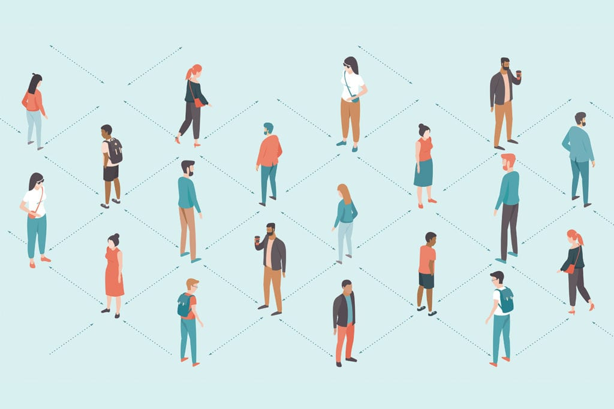

Violation Stream
COVID-19 spread is emotionally challenging for many people, changing day-to-day life in uprecede

COVID-19 spread is emotionally challenging for many people, changing day-to-day life in uprecede